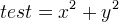

parent nodes:
[global.font: Arial]
Dave's PhD Research Notes....
What I have been doing
Introduction
Background - why?
Existing formats
Large Datasets
Scientific formats, HDF5 etc.
Metadata
Semantic Web
RDF, OWL, Ontologies...
LOD, Scientific Commons etc
Concepts
A Signal is a time series of Points, with a Point being the datum at an time instant. We refer to a sequence of sampled data values as a SignalSegment; a Signal is made up of one or more consecutive SignalSegments.
A Recording as a group of Signals that have been collected at the same time (and usually all relating to a single investigation or study). A Signal's temporal frame of reference is relative to the Recording of which is is part of.
Repositories
Annotation
Application Areas
Signal Naming
Time
Software
FieldML
VPH - Physiome Project
Journal Papers

WikiSettings